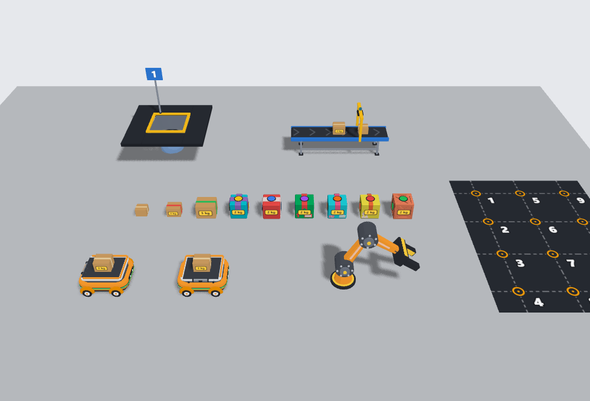
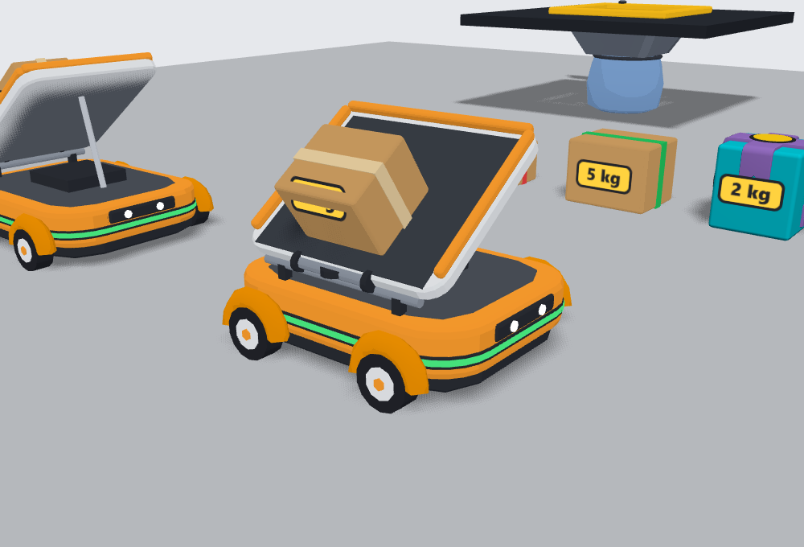
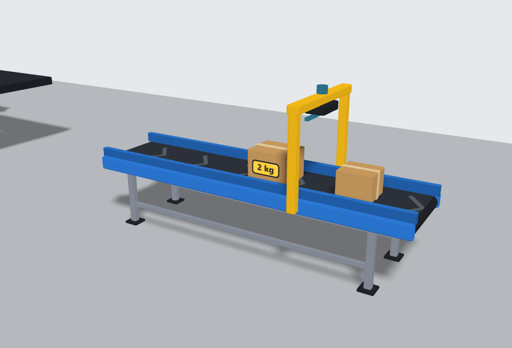
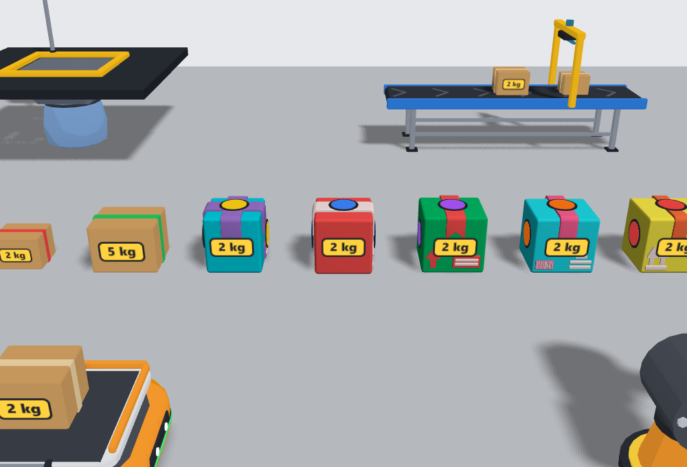
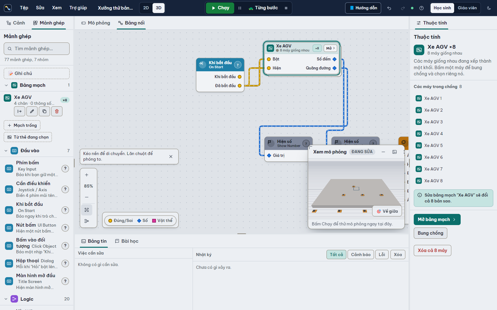
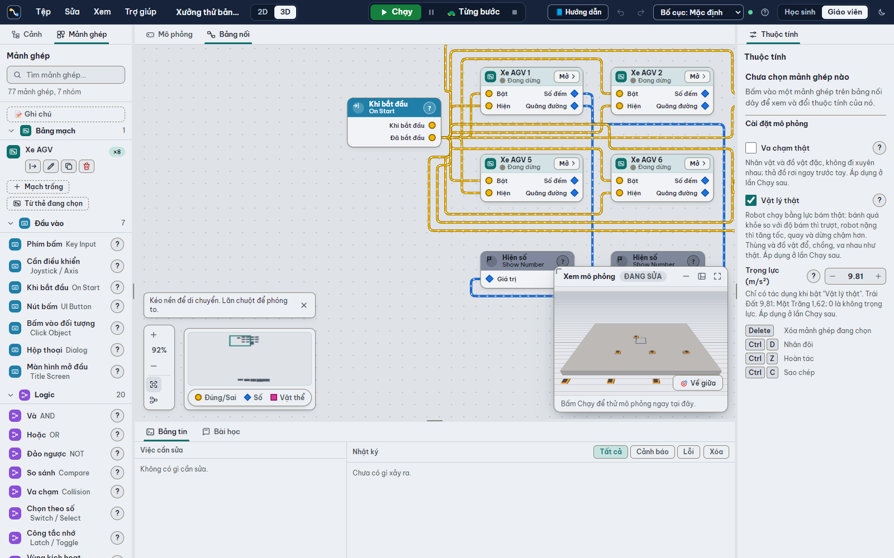
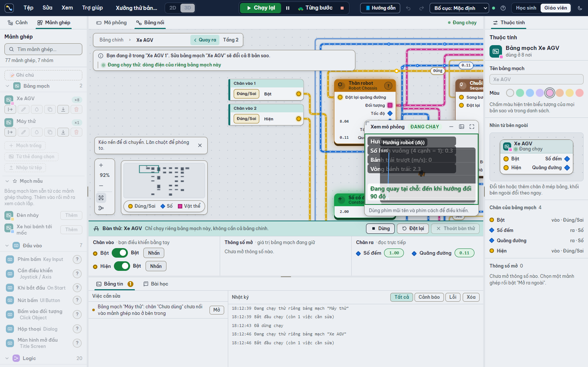

Bản thiết kế và tình trạng thật của bài mẫu: băng chuyền đưa kiện tới, cổng quét đọc màu và cân đọc khối lượng, tay máy đặt kiện lên xe, 8 xe AGV chở tới 6 cửa thả rồi đổ ngang. Mọi máy đều ghép từ mảnh ghép, dây nối và bảng mạch; không có code ép.
Ở tầng xưởng chỉ thấy khoảng 10–15 khối. Bấm đúp vào một khối để vào xem thẻ và dây bên trong. Sửa bảng mạch "Xe AGV" một lần là cả 8 xe đổi theo.
Luật phân loại: theo màu (loại 1…N vào cửa 1…N) và theo khối lượng (kiện nặng quá ngưỡng vào một cửa riêng).







| Phần | Tình trạng | Ghi chú |
|---|---|---|
| Lõi bảng mạch nhiều tầng | Xong | Trong bản chính |
| Trình sửa bảng mạch (2 phần) | Xong | Vào/ra tầng, chân, thông số mở, bàn thử, xuất/nhập tệp, mạch mẫu |
| Mảnh mới: Nhớ số, Bộ điều phối, Đọc màu 6 màu | Xong | Trong bản chính |
| Xe tự đi: Đi tới điểm, Mốc sàn, Đọc mốc, Tìm mốc | Xong | Dừng cách tâm mốc khoảng 2 cm |
| Hình mới (xe, tay máy, kiện, cửa thả, băng chuyền, mốc) | Xong | Là tuỳ chọn, bài cũ giữ nguyên |
| Tốc độ engine cho 8 xe | Xong | Chưa đo phần vẽ hình trên máy bạn |
| Bảng mạch "Trạm nạp" và "Cửa thả" | Dở dang | Đã có bản đầu trên nhánh riêng, bài kiểm thử chưa xong, chưa vào bản chính |
| Thân xe va chạm xoay theo xe + mâm đổ ngang | Dở dang | Làm được, nhưng thùng trên sàn xe trần bị trôi. Lần thử khử trôi đang dở |
| Bảng mạch "Xe AGV" và đội 8 xe | Chưa bắt đầu | Chờ hai phần dở dang ở trên |
| Bài mẫu trong menu "Bài mẫu" | Chưa có | Sẽ đưa phần trạm vào trước để bạn mở xem |
| 3 bài học "Bảng mạch" | Chưa bắt đầu |
10b hay 10c.Vì sao đang dừng: hai agent đang làm dở thì tài khoản hết hạn mức tuần của Fable 5.2. Hạn mức mở lại lúc 2 giờ sáng 22-11 (giờ Việt Nam). Phần đã làm vẫn nằm nguyên trên hai nhánh riêng, không mất.